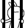

菜单
主界面
兔斯基
互联网早期
:) 字符表情
颜文字
qq时代
小黄人表情
“中老年”表情
兔斯基表情
绿豆蛙表情
diy时代
暴走漫画表情
微信时代
假人表情
熊猫人表情
王境泽表情
窃格瓦拉表情
等待开发...
表情起源
2006年9月6日。中国传媒大学动画系毕业的王卯卯创作了名为“兔斯基”(Tuzki)的卡通兔子，在此之后随着QQ表情的传播红遍了中国。 自此之后在2008年，兔斯基的著作产权由时代华纳其旗下的特纳广播收购，成功进行了商业化。
表情例子
有意无意间，人们都会用到小黄人表情,例如:
偷笑
听歌
我好冤
放开我
美好的明天在召唤我
去你的吧
好晕
啦啦啦啦
悲剧啊
更多有关表情可以点击
官网
进行查看
表情影响
兔斯基表情可谓是一代人的回忆了，它为表情包的日后发展有着很多影响：
这是在中国土生土长的表情包，为之后表情包的本土化有着很大的影响；
这个表情不再是单纯模拟人的表情动作，而是带有很大的夸张成分，为以后中国表情包的"不正经化"打下了基础；
这个表情的商业成功催发了许许多多的创作者进行表情包创作；
感谢阅读！
written by: 黎思宇、 刘旭鑫
致谢开源
MDUI
开发者们

 偷笑
偷笑 听歌
听歌 我好冤
我好冤 去你的吧
去你的吧 好晕
好晕 啦啦啦啦
啦啦啦啦 悲剧啊
悲剧啊